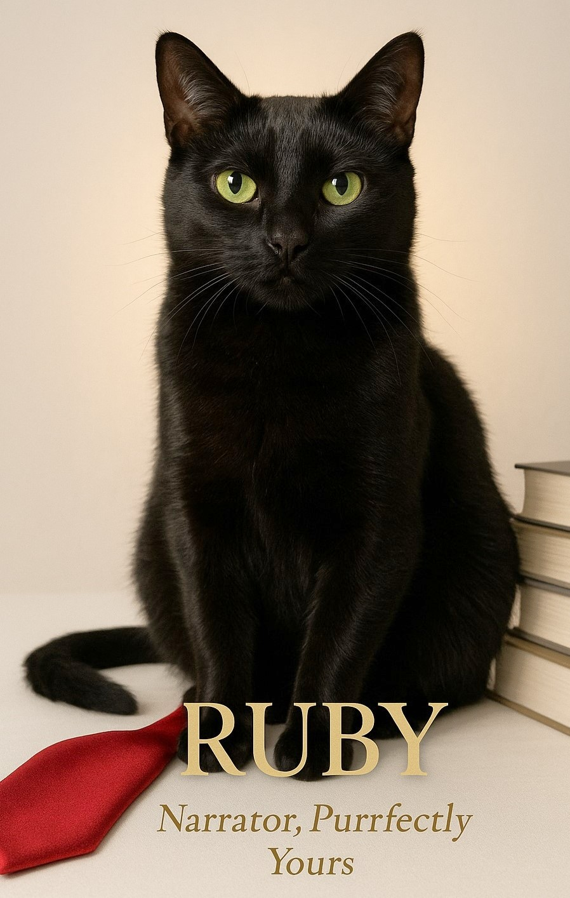
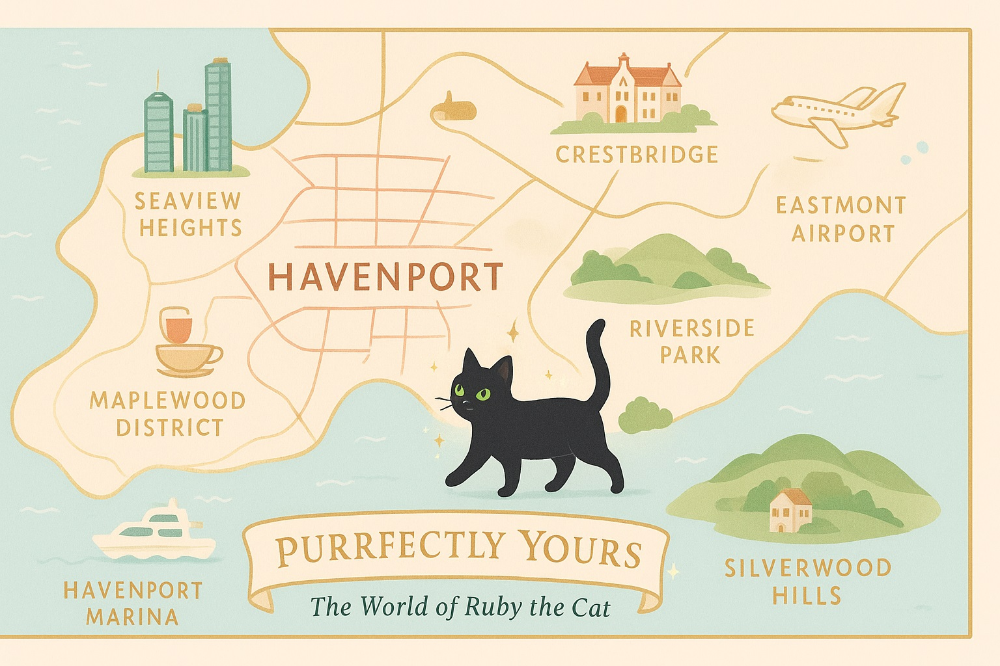

About the Authors
Vicky Zarielle writes witty, heartfelt romances where billionaires fall, hockey stars sweat, and no one is safe from a little chaos. A lifelong book lover with a weakness for sharp banter and slow-burn tension, Vicky blends steamy chemistry with emotional depth. She writes modern love stories that sparkle with humor, heart, and just enough heat to keep readers turning the page long past midnight.
Ruby the Cat insists she’s the real author. A sleek black cat with green-gold eyes and zero patience for human nonsense, Ruby narrates the Purrfectly Yours series with claws-out commentary. She’s here to judge billionaires, mock bad decisions, and make sure readers know the truth behind every swoon-worthy moment. Don’t let Vicky fool you—Ruby sees everything, and she always gets the last word.
Together, Vicky and Ruby bring you love stories with claws, chaos, and a whole lot of heart.
The World of Ruby the Cat
Ruby may be a sleek little cat with a knack for appearing at the most dramatic of moments, but her adventures unfold in a world full of romance, glamour, and just the right touch of mischief. Below, explore the key places where Ruby’s humans fall in love, chase their dreams, and—of course—find themselves outwitted by a clever feline.
Main City: Havenport
A modern coastal city, alive with sparkle and opportunity.
Havenport is the central hub of Ruby’s stories—a vibrant, upscale city where glittering skyscrapers meet cozy neighborhoods. It’s here that billionaires live in glass-walled penthouses, heroines sip lattes in tucked-away cafés, and love stories unfold under the city lights.
- Seaview Heights: Towering luxury high-rises with sweeping ocean views. Perfect for rooftop romance—or for Ruby to prowl a billionaire’s penthouse.
- Maplewood District: A charming residential area with leafy streets, local coffee shops, and the heroine’s apartment. Homey, warm, and perfect for everyday romance.
- The Galleria: Upscale shopping, glittering art galleries, and candlelit restaurants. Ideal for meet-cutes and unforgettable first dates.
- Riverside Park: A green escape in the heart of the city, perfect for afternoon strolls, surprise picnics, and impromptu cat adventures.
- Havenport Marina: Sparkling waters and yacht parties, where secrets are shared under the stars and weekend escapes begin.
Secondary City: Crestbridge
A quieter counterpart to Havenport—just far enough away to spark tension.
Crestbridge is only a short drive away, but its leafy streets and historic downtown feel like another world. Here, romance is softer, more intimate—perfect for quiet escapes, unexpected encounters, and the kind of misunderstandings that keep hearts racing.
Other Locations
- Eastmont Airport: Where emotional departures, grand reunions, and daring “chase scenes” happen.
- Silverwood Hills: Rolling countryside estates, lavish parties, and secret weekend getaways.
- Local University: A lively campus that adds friendships, sports drama, and social sparks to Ruby’s world.
Wherever Ruby goes—whether slipping onto a yacht, wandering through a park, or curling up in a penthouse window—she brings a touch of magic, mischief, and matchmaking charm.